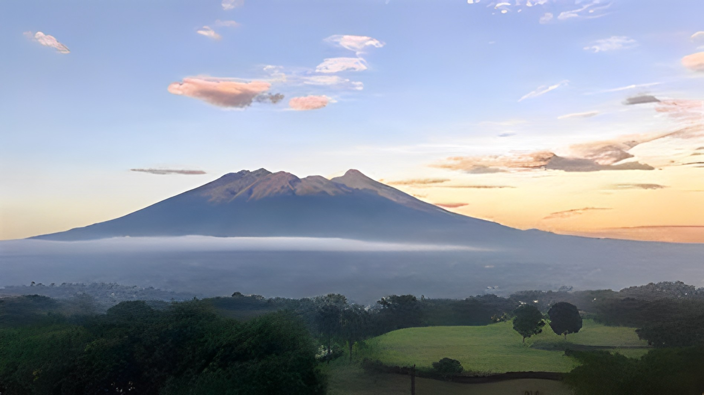
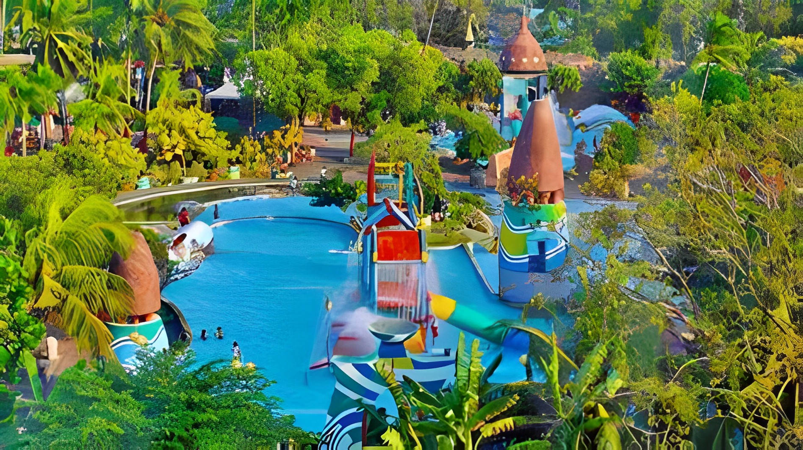
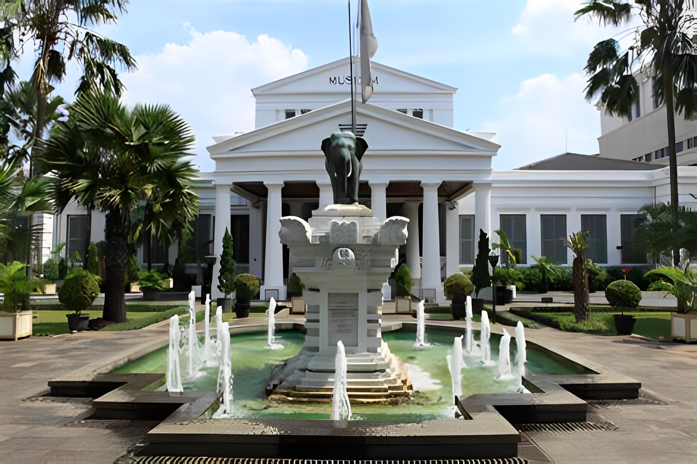

Sebagai kota pelabuhan, Jakarta pada mulanya bernama Sunda Kelapa. Kemudian, pada 22 Juni 1527,
Pangeran Fatahillah datang dan mendirikan kota Jayakarta untuk mengganti Sunda Kelapa. Tanggal
inilah yang kemudian ditetapkan sebagai saat berdiri kota Jakarta.
Kota Jayakarta berkembang sebagai kota pelabuhan yang sibuk, di mana para pedagang dari Cina,
India, Arab, Eropa, serta negara-negara lain saling bertukar komoditas.
Berdasarkan filosofi Sunda, kata Bandung juga berasal dari kalimat Nga-Bandung-an Banda Indung,
yang
merupakan
kalimat sakral dan luhur karena mengandung nilai ajaran Sunda. Nga-Bandung-an artinya
menyaksikan
atau
bersaksi.
Banda adalah segala sesuatu yang berada di alam hidup yaitu di bumi dan atmosfer, baik makhluk
hidup
maupun
benda
mati. Sinonim dari banda adalah harta. Indung berarti Ibu atau Bumi, disebut juga sebagai Ibu
Pertiwi
tempat
Banda
berada.
Pada 1619, VOC Belanda yang dipimpin Jan PieterszoonCoen menghancurkan Jayakarta, lalu membangun
kota baru di bagian barat sungai Ciliwung yang dinamakan Batavia, diambil dari Batavieren, nenek
moyang bangsa Belanda
Batavia direncanakan dan dibangun nyaris mirip dengan kota-kota di Belanda, yaitu dalam bentuk
blok yang masing-masing dipisahkan oleh kanal, dilindungi oleh dinding sebagai benteng, serta
parit. Selesai dibangun pada 1650, Batavia adalah tempat tinggal bangsa Eropa. Sementara bangsa
Cina, Jawa, dan penduduk pribumi lainnya disingkirkan ke tempat lain.
Geografis

Menurut Dinas Cipta Karya, Tata Ruang dan Pertanahan Provinsi DKI Jakarta, DKI Jakarta berada di
Pulau Jawa yang secara geografis terletak di antara 5° 10′ 00″ LS – 6° 22′ 21,5″ LS dan 106° 41′
12,5″ BT – 106° 58′ 24,2″ BT dengan titik tertingginya berada pada ketinggian 79 meter di atas
permukaan laut (mdpl). DKI Jakarta berbatasan langsung dengan Laut Jawa di sebelah utara;
Kabupaten Bekasi dan Kota Bekasi di sebelah timur; Kota Depok di sebelah selatan; serta
Kabupaten Tangerang dan Kota Tangerang di sebelah barat. Secara wilayah, DKI Jakarta dikelilingi
oleh Jawa Barat, Banten, dan Laut Jawa.
Kota Bandung dialiri dua sungai utama, yaitu Sungai Cikapundung dan Sungai Citarum beserta
anak-anak
sungainya yang
pada umumnya mengalir ke arah selatan dan bertemu di Sungai Citarum. Dengan kondisi yang
demikian,
Bandung
selatan
sangat rentan terhadap masalah banjir terutama pada musim hujan.
Wisata
Selain SDM yang banyak juga banyak tempat kunjungan/pariwisata. Pariwisata yang ada di kota
Jakarta diantaranya sebagai berikut :Taman Mini Indonesia Indah, Pulau Seribu, Kebun Binatang
Raguna, Taman Impian Jaya Ancol, sedangkan pariwisata sejarah yang ada di kota Jakarta baik itu
museum dan tugu yaitu Museum Gajah, museum Fatahillah, Monumen Nasional, Museum Kebangkitan
Nasional,Kota Tua Jakarta, dan lain -lain.
Kota jakarta yang terkenal banyak bangunan juga memiliki pariwisata yang indah yang banyak
diminati para kalangan milenial hingga kalangan tua diantaranya yaitu sebagai berikut: Pantai
Ancol, Kepulauan Seribu, Teluk Jakarta dan lain-lain. Banyak ragam dan macam -macam tempat
wisata di kota Jakarta sehingga banyak orang -orang ketika di hari libur melakukan kunjungan di
kota Jakarta, banyak pengunjung di kota tersebut tidak hanya kalangan asli Jakarta, tetapi
kebanyakan dari luar Jakarta seperti pengunjung dari sumatra bahkan ada pengungjung dari Luar
Negeri.
Ancol

Ancol adalah suatu kata yang berasal dari bahasa Sunda. Menurut Kamus Sunda-Inggris A Dictionary
of the Sunda Language of Java yang diterbitkan oleh Jonathan Rigg di Batavia pada tahun 1862,
kata ancol mengandung arti tanah semenanjung. Orang Sunda dulu menggunakan kata ancol untuk
menamai kawasan di sebelah timur kota tua Jakarta. Naskah Kuno Sunda Bujangga Manik menyebutkan
wilayah ini saat dia menempuh perjalanan dari pelabuhan Sunda Kalapa ke Pajajaran.
Letak strategis kawasan ancol rupanya sudah dimanfaatkan jauh sebelum kedatangan VOC, yaitu pada
masa agama Islam mulai tersebar di daerah pesisir Kerajaan Sunda. Dalam naskah koleksi
Perpustakaa) Nasional koropak nomor 406, yaitu naskah Carita Parahiyangan, Ancol disebut-sebut
sebagai salah satu lokasi medan perang disamping Kalapa, Tanjung, Wahanten dan tempat-tempat
lainnya pada masa pemerintahan Prabu Surawisesa yang masih memeluk agama Hindu (1521-1535).
Kata ancol juga digunakan untuk menamai suatu kawasan kelurahan di Bandung. Penggunaan kata
ancol kemudian berkembang untuk menamai apartemen dan lain-lain.
Museum Nasional

Museum Nasional Republik Indonesia, atau yang sering disebut dengan Museum Gajah, adalah sebuah
museum arkeologi, sejarah, etnografi, dan geografi yang terletak di Jakarta Pusat dan persisnya
di Jalan Merdeka Barat 12. Museum ini merupakan museum pertama dan terbesar di Asia Tenggara.
Harga Tiket Museum Nasional Perorangan:
Dewasa Rp15.000/orang.
Anak-anak Rp7.500/orang
Cikal bakal museum ini lahir tahun 1778, tepatnya tanggal 24 April, pada saat pembentukan
Bataviaasch Genootschap van Kunsten en Wetenschappen. J.C.M. Radermacher, ketua perkumpulan,
menyumbang sebuah gedung yang bertempat di Jalan Kalibesar beserta dengan koleksi buku dan
benda-benda budaya yang nanti menjadi dasar untuk pendirian museum.